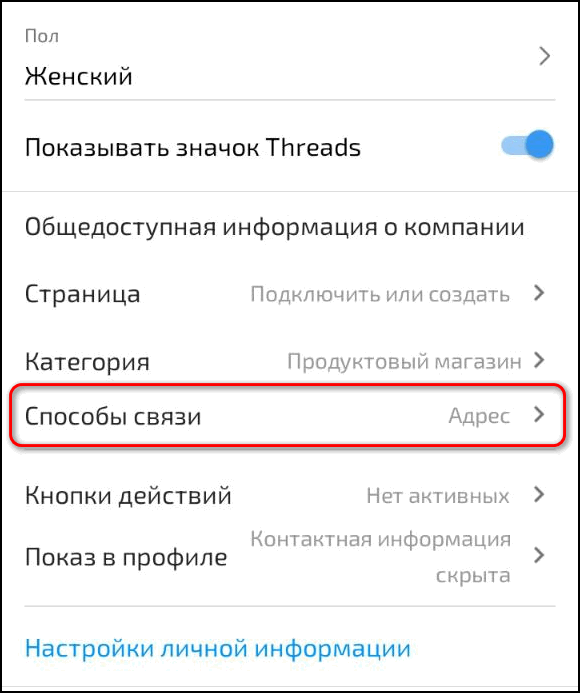
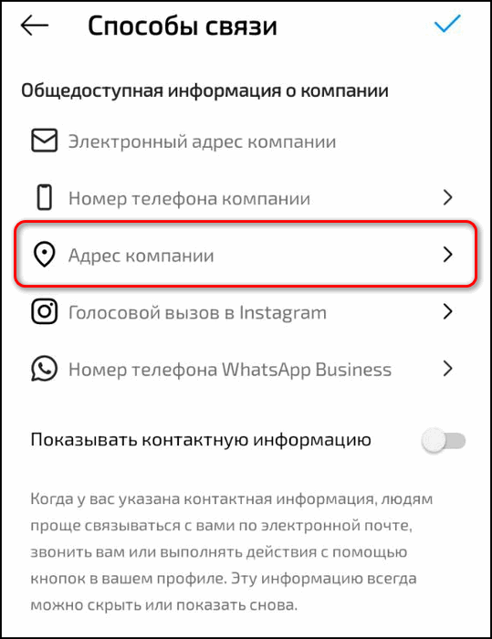
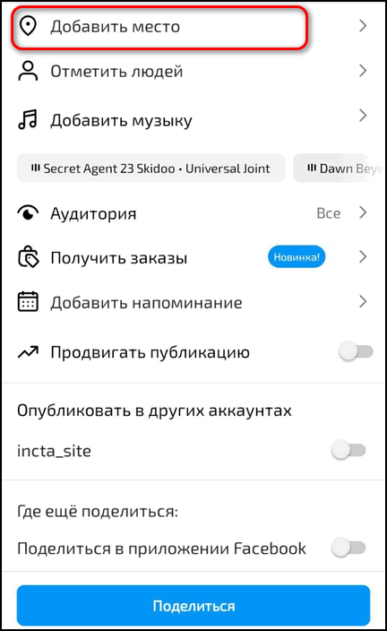

Как добавить адрес в описании профиля Инстаграма*

Добавить адрес в Инстаграм* необходимо, если вы занимаетесь бизнесом в своем городе или из способов доставки только самовывоз. К тому же, это дополнительный способ повышения доверия у потенциальных клиентов.
Адрес в Инстаграм*: где и как указывать
Для владельцев бизнес-аккаунтов есть функция «Указать точный адрес». Находится в «Редактировать информацию», переходя в свой аккаунт. Там нужно вписать название, а далее Инстаграм* предложит варианты, которые уже есть в социальной сети.
Как указывать:
- Зайти в Инстаграм* - перейти в раздел: «Редактировать профиль».
- Способы связи – Точный адрес.

- Разрешить доступ к сервисам геолокации.

- Начать писать название – выбрать из списка, если есть или указать самостоятельно.
Чтобы информация стала доступна посетителям страницы, нужно выбрать: «Показ в профиле» и подтвердить. Добавить адрес в шапке профиля в Инстаграме* можно двумя способами: через функцию «Указать город» (отыскать место по геолокации и списку уже доступных) или через «Точный адрес» (написать самостоятельно).
Преимущества для бизнес-аккаунтов
Добавляя адрес в Инстаграме* в профиле бизнес, владелец повышает уровень доверия потенциальных покупателей. Они знают, куда могут обратиться и что делать в случае претензий. Другие причины, почему стоит добавить адрес:
- подтверждение деятельности. Это возможность посетить и посмотреть товар в реальной жизни;
- выбор варианта доставки. Покупатели доверяют больше тем местам, которые находятся в их городе или соседнем, потому что это уменьшает время доставки;
- простой подбор целевой аудитории. Если над товарам дополнительно указывать геолокацию, то проблем с поиском потенциальной клиентской базы становится меньше.
В разделе «Точный адрес» владелец аккаунта может указать любые данные. И чтобы магазин был максимально удобен для покупателей: указать в описании график работы и добавить дополнительные способы связи. Предположим, номер телефона или контактный чат в WhatsApp*.
Геолокация в Инстаграме*
Местоположение можно добавить к любой публикации, вне зависимости от её статуса. Это помогает постам продвигаться по геометкам и получать больше внимания от целевой аудитории. Добавить местоположение в Инстаграм* необходимо при размещении карточек товаров, в приветственной записи и даже Историях. Зависит от типа продвижения страницы и регулярности новых постов, ошибки продвижения своего магазина перечисляла в другой статье. Как поставить геолокацию в Инстаграм*:
- Зайти в приложение – выбрать: «Создать публикацию».
- Выбрать снимок из Галереи или сделать – перейти к добавлению описаний.

- Выбрать пункт: «Местоположение» - указать адрес.
Также геометки прописывают в хештегах, дополнительно повышая выдачу по этому населенному пункту.
Создать свое место
Чтобы добавить город в Инстаграм*, пользователю придется завести страницу на Facebook*. В этой социальной сети нужно создать бизнес-профиль и уже там указать адрес своей компании, магазина. Добавление нового местоположения возможно как с мобильной, так и компьютерной версий. Как сделать со смартфона:
- Зайти в Фейсбук* – перейти к созданию новой публикации.
- Выбрать: «Добавить место» - указать, что в списке нужного нет.
- Выбрать: «Создать» - вписать нужные данные.
- Сохранить изменения.
После модерации геолокация станет доступна для следующих постов в Фейсбуке*. Чтобы указывать ту же в Инстаграме*, нужно связать оба аккаунта. Подключить Инстаграм* к Фейсбуку*:
- Зайти в Instagram* - Настройки.
- Центр аккаунтов – Подключить еще одну страницу.
- Указать социальную сеть и разрешить доступ.
Также в Настройках нужно проверить кросспостинг: если он активен, то новая геометка скоро появится.
Список необычных геолокаций в Инстаграме*
Кроме возможности привлечь клиентов через геолокацию, аудиторию можно повеселить необычной подписью:
- The Lair of all Things Dark and Evil;
- Логово;
- Wonderland;
- Лучшее место на земле;
- Озеро Унылое;
- Остров Мужик;
- Пруд Шоколадка;
- Feed Me Now;
- Пустота;
- Где-то там вдали;
- Nowhere You Have To Know;
- Пруд с лягушками;
- Dark Academy;
- Факты и печенье;
- You&me;
- Мятный чай;
- Love;
- Мир;
- Во сне;
- В моем сердце;
- Мир поэзии.
Достаточно при поиске геолокации указать любое слово, чтобы найти необычные сочетания. Продвижение по таким меткам минимальное, но заинтересует читателей.